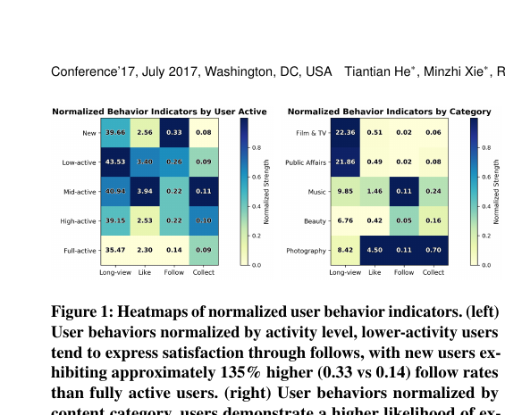
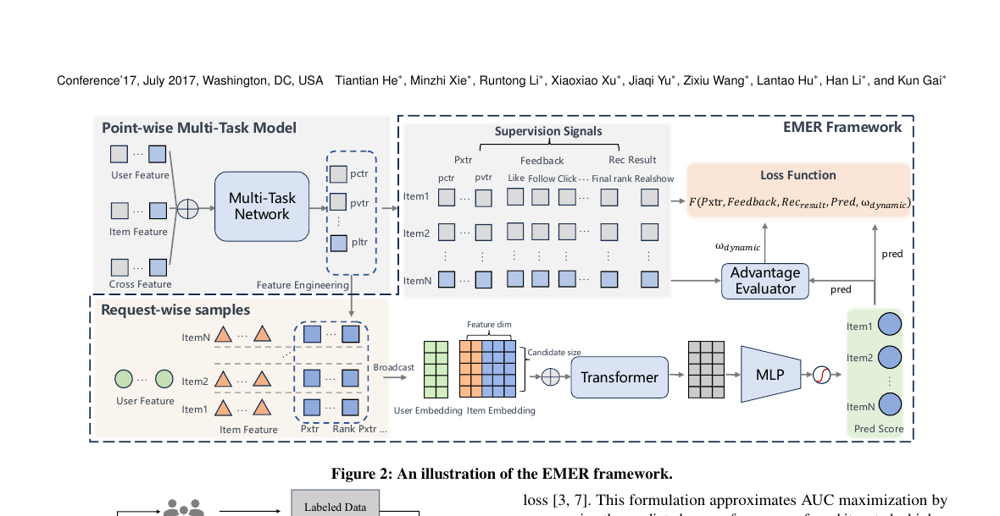
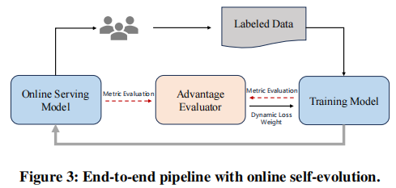
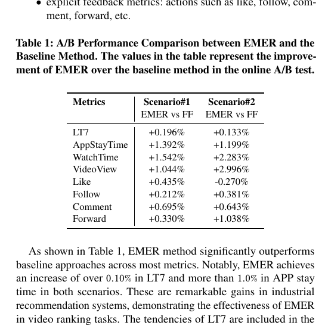
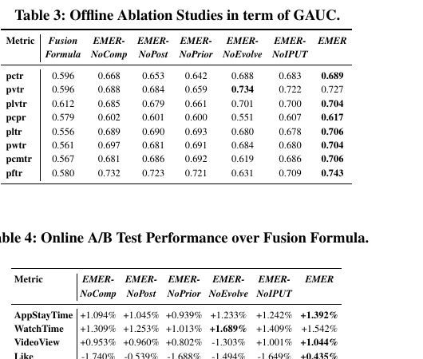
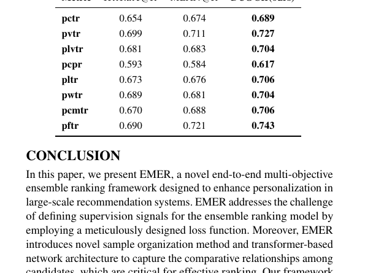

EMER
1. 基本信息
- 标题：An End-to-End Multi-objective Ensemble Ranking Framework for Video Recommendation
- 作者：Tiantian He, Minzhi Xie, Runtong Li, Xiaoxiao Xu, Jiaqi Yu, Zixiu Wang, Lantao Hu, Han Li, Kun Gai
- 机构：Kuaishou Technology
- 时间：2025
- arXiv：https://arxiv.org/abs/2508.05093
- 关键词：Multi-objective Ranking、Ensemble Ranking、Video Recommendation、Transformer、Offline-Online Consistency
- pdf位置：
C:\Users\chaol\Desktop\推荐论文阅读\reward sys\emer.pdf - 笔记位置：
论文笔记/精排/LTR与多目标融合/EMER.md - 分类：精排 / LTR与多目标融合
2. 相关论文
- EASQ：可以把它看成另一条“用户满意度对齐”路线的后续工作。EMER 仍然是从后验行为里构造相对满意度，用 comparative learning 逼近真实满意；EASQ 则认为既然已经能拿到问卷满意度，就应该直接把这类更高质量但极稀疏的监督接进在线学习，并用
LoRA + 双路 MoE + 在线 DPO构造稳定对齐通路。 - Pantheon：两篇都在解决工业推荐里的多目标融合排序问题，目标都是把原本依赖人工公式的
ensemble sort / ensemble ranking改成可学习的端到端系统。 但两者路线明显不同：Pantheon 更像 ranking 后接的插件式融合器，核心是复用多任务 tower hidden-state、输出单一融合分数，再用IPPO自动搜索 Pareto 权重；EMER 更像 直接面向 request 内候选比较的 LTR 框架，核心是request-wise样本组织、Transformer comparative modeling、相对满意度监督，以及用IPUT + self-evolving去缓解 offline-online 不一致。 如果把两篇放在一起看，可以把 Pantheon 理解为“如何更好地融合已有 ranking 表征”，把 EMER 理解为“如何把融合排序本身重写成比较学习问题并显式对齐线上收益”。 - UnifiedRL：更早的工业 RL-MTF 方案，同样想替代多目标融合里的手工调权，但做法是保留原有多任务分数与融合公式，用 RL 学 personalized fusion weights，并靠定制 exploration policy 与 progressive training 优化长期回报；EMER 则进一步把问题改写成 request-wise comparative learning。
2.1 与 xMTF 的联系与区别
EMER 和 xMTF 面向的是同一个大问题：都想把工业推荐里“先做多任务预测、再靠手工公式融合”的链路改造成可学习的最终排序器。从 serving 结果看，它们最后都可以写成“给一个 request 里的每个 candidate 输出一个标量分数，再按分数排序”，因此表层上都像是在学一个新的最终打分器。两篇论文也都承认没有 item-level 的总体满意度真值标签，所以训练都不能直接依赖单一 supervision，而是要用更间接的用户满意度代理信号来约束最终排序分数：xMTF 用 RL 的长期回报近似总体满意度，EMER 用 request 内后验反馈、先验 pxtr 排序关系，以及额外的 offline-online 对齐设计逼近真实满意。
真正的区别在于它们学“这个分数”时看的对象完全不同。xMTF 的输入是单个 item 的 K 个多任务预测和当前用户状态，输出是这个 item 的单个融合分数；它把每一路预测单独送进一个 MFC，得到 K 个单调贡献项后求和，所以本质上是 point-wise、可分解的 fusion function learning。对应的 loss 也围绕这个结构展开：外层 actor-critic 优化长期奖励，内层通过 BPR-style L_transfer 从外层蒸馏排序知识，再用 L_mono 约束每路变换保持单调。EMER 的输入则是同一 request 的整组候选，模型会同时看到候选集合里的 user/item 特征、多个 pxtr 和 rank 信息，再用 Transformer 在候选维度上做 self-attention，因此某个 candidate 的分数会显式依赖同组其它 candidate；它本质上是 request-wise、联合比较式 candidate-set ranking。它的 loss 也因此变成 request 内 pairwise 目标：用后验相对满意度构造 L_posterior，用多个先验 pxtr 排序关系构造 L_prior，再配合 IPUT 与 self-evolving 解决曝光偏差和 offline-online 不一致。简化理解的话，xMTF 更像是在学“多目标怎么融合”，EMER 更像是在学“同一请求里的候选应该怎么彼此比较”。
3. 一句话总结
EMER 想把短视频推荐里原本靠人工公式做的多目标融合排序，升级成真正端到端的模型：它用 request-wise 样本组织 + Transformer 显式比较候选之间的相对关系，用“后验相对满意度 + 多个先验 pxtr”的联合监督解决没有单一真值标签的问题，再用 IPUT 和 self-evolving 动态加权把离线优化目标尽量对齐到线上真实收益。
4. 论文在解决什么问题
4.1 为什么“多目标融合排序”是短视频推荐里最难手工调的环节
在工业短视频推荐里，前面往往已经有很多 point-wise 模型，分别预测 watch time、like、follow、comment 等不同目标。最后线上要把这些分数揉成一个标量再排序，传统做法通常是人工公式。
论文认为这种做法有三个根本问题：
- 没有统一 ground truth：用户满意度不是单一标签，点赞、关注、长看、分享都只是局部投影。
- 离线线上不一致：你把某个 interaction pxtr 的 AUC 提高了，不代表线上总互动量就一定提升。
- 缺少候选间比较建模：实际排序是“同一请求内多个候选谁更该排前”，但很多模型只独立估每个 item 的绝对分。
4.2 Figure 1：用户满意度本身就是分人群、分内容类型变化的

Figure 1 不是方法图，但它解释了这篇论文为什么不能直接用单一标签学一个融合分数：
- 左图按用户活跃度看，低活跃 / 新用户更可能用
follow这种行为表达满意，而不是只靠长看。 - 右图按内容类目看，不同类目对应的满意度表达也不同；比如文娱内容更容易体现为更长观看，音乐内容更可能触发
like / follow / collect。
这意味着“满意”不是一个固定标尺。
我的理解是：EMER 后面整个监督设计，本质上都在回答这个问题，即怎样在没有统一标签的情况下，只用可观察行为逼近“相对更满意”。
5. EMER 框架总览
5.1 Figure 2：EMER 不是单个 loss，而是一整套从样本组织到排序输出的框架

Figure 2 可以拆成四段来看：
- 左上：point-wise 多任务模型提供多个先验信号
Pxtrs这些 pxtr 包括pvtr / pctr / plvtr / pltr / pwtr / pcmtr / pftr等，本来就是系统里已有的多目标预测器。 - 左下：把同一 request 的候选打包成一个样本 不是“一条样本 = 一个 item”，而是“一条样本 = 一个 user-request 下的一组候选 item”。
- 中间：把用户特征广播到每个候选，再拼 item 特征和 rank pxtr 后送入 Transformer
所以 Transformer 的输入更像
候选集合 token 序列，长度是 candidate size，而不是用户行为序列长度。 - 右侧：MLP 输出每个候选的最终
pred score，loss 同时吃先验 pxtr、后验反馈、重排结果以及动态权重
这个设计最关键的一点是：模型不再只问“这个 item 好不好”，而是问“在这一组候选里，它相对其它 item 到底占什么位置”。
5.1.1 输出形式
这篇论文在 Figure 2 里只写了 pred / Pred Score，没有把输出张量显式写成公式，这是它比较容易让人困惑的地方。按图和后面的 loss 联合来看，EMER 的主模型输出可以明确理解成：
- 输入：一个 request-wise 样本，也就是同一次请求里的
M个候选 item - 主输出：
M个标量分数 - 最终排序输出：把这
M个分数按从大到小排序，得到这一请求下的最终重排结果
也就是说，EMER 不是输出一个全局单值，而是对一个 request 内的每个 candidate 输出一个分数。
后面所有 pairwise loss，本质上都是在约束这些标量满足：
- 如果 item
i比 itemj更优，那么要让
为了方便理解，也可以把模型输出写成一个向量：
其中 M 是这个请求里的候选数。论文图里的 Pred Score 就是这个向量里的每个分量。
5.2 Request-wise sample organization：为什么它既能减 exposure bias，又能让比较关系可学
论文把训练样本组织到“请求级别”，即把同一推荐请求中的全部候选 item 放进一个样本里，包含曝光与未曝光 item。
这一步有两个作用：
- 让比较关系落在同一上下文内
同一次请求中的候选面向的是同一个用户、同一时刻、同一个上下文。只有在这个条件下，
item_i比item_j更优才是有意义的。跨请求比较会混入用户差异和时序漂移，pair label 会变脏。 - 缓解只从曝光 item 学习带来的偏差 如果样本里只有被展示 item，模型看到的永远是“已被历史策略筛过”的结果；把未曝光候选也拉进来，至少在先验 pxtr 监督上可以对整组候选进行更完整比较。
隐藏前提是：系统必须能回放或重建 request 级候选集合；如果日志里只存最终曝光结果，这个训练方式就成立不了。
5.3 Feature engineering + Transformer：这里建模的是“候选集合”，不是传统 user sequence
论文给每个候选补了 NormalizedRanks，用来表示它在不同 pxtr 下相对整组候选的位置。然后把 user embedding 广播到每个候选，与 item embedding、rank pxtr 一起组成候选 token，送进 Transformer。
这里容易误解的一点是“Transformer 到底在混什么”：
- 输入形状可以理解成
N × D，N是一个 request 的候选数，D是每个候选的拼接后表征维度。 - Self-attention 沿着候选维度做，因此学到的是“候选之间的相对影响与对比关系”1。
- 输出仍然是
N × D，所以后面接逐候选 MLP 打分是合法的，不需要像序列压缩那样额外解释 shape 回对齐问题。
换句话说，EMER 的 Transformer 不是为了建模时间依赖，而是把排序问题显式写成“集合内比较”问题。
6. 监督设计
6.1 Relative Advantage Satisfaction：把“满意度”改写成同一 request 内的相对偏好
论文先定义后验监督：不用绝对满意分，而是在一个请求内部，根据反馈构造“哪个 item 更让用户满意”的 pair。
核心层级是：
- Many Positives > Single Positive > No Positive2
- 正反馈更多的 item，预测分应当高于正反馈更少或没有正反馈的 item
作者用 pairwise logistic loss 去实现这个约束：
这里最重要的隐藏条件是：==pair 只能在同一 request 内构造==3。
因为“一个用户对 A 点赞、另一个用户对 B 长看”并不能直接比较，只有同一请求里的候选共享同一用户和上下文，Relative Advantage 才有语义。
这个式子里，i 和 j 是同一个 request 内两个候选 item 的索引，D 是按 Many Positives > Single Positive > No Positive 这套规则构出来的正 pair 集合，也就是论文写作 的那些样本对。 和 则是模型给这两个候选打出的最终分数，==二者相减后再过一层 sigmoid，可以看成“模型认为 i 应该排在 j 前面”的概率==。于是整个 做的事情就很直接：只要某个正 pair 本来应该 i > j，它就会逼着模型把 拉大。
这里还藏着一个很实际的工程前提：论文里的一个 request 不是“只曝光一个 item”的极简交互，而更像一次 ranking 返回的一组候选 / 结果窗口。后验反馈只能来自其中真正被展示的 item；未曝光候选虽然也在 request-wise sample 里，但主要依赖 L_{prior} 学习。如果一个 request 最终只曝光一个 item，或者日志里无法把同一窗口内多个已曝光 item 的反馈对齐起来，那么 L_{posterior} 能构造出的 pair 会很少，甚至直接退化。
6.2 为什么光靠后验反馈不够：它稀疏，而且受曝光偏差影响
论文明确指出后验反馈有两个硬伤：
- 稀疏：显式交互本来就少。
- 有曝光偏差：只对已经展示的 item 才能看到反馈。
所以 EMER 又把多个先验 pxtr 当成额外监督目标。对每个 pxtr，都构造一个“谁更大谁应排更前”的 pairwise AUC surrogate：
这里的 不是固定超参，而是由后面的 self-evolving scheme 动态给出；可以先把它理解成“每个先验目标对最终排序的投票权重”。
这一步的意义不是把多个目标简单求和，而是把每个 pxtr 当成“用户满意度的一个维度”。
作者的论点是：如果模型能在这些维度上都维持排序质量，整体用户满意度就更可能提升4。
更具体一点，论文会对每个先验目标 pxtr 单独构造一份 pairwise 监督。 表示“在这个目标下，item i 是否应该排在 item j 前面”；它不是来自真实后验反馈，而是直接来自该 pxtr 本身的大小比较。模型端并不会为每个 pxtr 再单独输出一个 head，而是始终复用同一套最终排序分数 。二者之差经过 sigmoid 后得到 ，表示模型当前认为 i 应排在 j 前面的概率。换句话说，这里不要把 prediction 和 label 搞反：==label 来自每个 pxtr 的大小关系，prediction 来自最终总分差经过 sigmoid 后得到的 pairwise 概率==。于是， 的作用就很明确了：如果某个先验目标下 pxtr_i > pxtr_j，那就逼着最终排序分数也尽量满足 \hat y_i > \hat y_j。最后，所有单目标 loss 通过动态权重 汇总成 。论文这里把所有先验目标的集合记作 Pxtrs，分母里的 N 指的是这些 pxtr 的个数，不是 request 内的候选数；总训练目标则是 。
这里最容易误解成“最终总分必须同时服从所有 xtr 的相对顺序”。更准确的理解是：L_{prior} 是软约束，不是硬性一致约束。若多个 xtr 对同一对 item 的判断一致，梯度会叠加；若它们互相冲突，模型就会学一个带权折中。局部地看某一对 (i,j)，最优的 会更接近 ，所以 本质上决定的是各目标对这对排序的“投票权”。从这个角度看，L_{prior} 很像多个 xtr 教师共同蒸馏一个最终排序分数。
6.3 Figure 3：self-evolving 不是另训一个模型，而是用线上服务模型做动态参照

Figure 3 展示了一个在线闭环：
- 线上 serving model 提供当前真实对照。
- 训练中的新模型与线上模型一起做 metric evaluation。
- Advantage Evaluator 根据“新旧模型在不同目标上的相对优劣”给出动态 loss 权重。
论文里的权重写成：
直观理解是：
- 某个目标如果当前模型相对上一版没有明显优势，甚至变差，就应该被赋予更高权重继续补。
- 某个目标如果已经领先，就没必要继续无限放大它的梯度。
这里一个容易忽略但很关键的工程点是：他们不需要额外保存“旧模型副本”。
因为系统在持续在线训练，当前 serving model 天然就是 的近似，而带新梯度的训练模型对应 。
这套设计成立的前提是：评估指标在新旧模型间可稳定比较，而且不同目标的 metric 都是正值、方向一致；否则动态权重会变得不稳定。
如果顺着论文的公式继续读，这里的动态权重并不是凭经验手调出来的，而是来自新旧两版模型的直接比较。论文把当前训练参数记成 ，上一版模型记成 ，然后写出标准的梯度更新式 。真正关键的是后面那条 ：这里的 就是 EMER 模型，x 是一个 request-wise 样本，而 AE 会拿当前模型和上一版模型在某个评价指标上的表现做比。论文进一步把这个比值写成上一版 除以当前版 ，也就是说，如果当前模型在某个目标上的指标反而更差，分母变小，AE 就会变大，于是这个目标的权重 会被抬高；如果当前模型已经更好，这个权重就会自然回落。它本质上是在做“哪里退步了，就优先补哪里”的自适应再平衡。论文后面试过 HitRate@K、MEAN@K 和 DCG@K，最后认为 DCG@K 更适合这个评价器。
这和 Pantheon 的调权闭环在思路上很接近，都是拿“当前模型 vs 参考模型”的相对优劣来自动调多目标权重；但两者并不完全相同。EMER 是直接用 AE 把这种相对优劣映射成连续的 ，更像在线自适应再平衡；Pantheon 的 IPPO 则是维护 base/reference model，用规则化的迭代搜索和小步长增权去移动 Pareto 权重结构，更像自动化的 Pareto 调权搜索。因此，可以把 self-evolving 理解成持续把模型往更好的多目标折中点推，但不宜机械地把它等同成 Pantheon 那种显式的 Pareto frontier 搜索。
7. Offline-online 一致性：IPUT 为什么必要
7.1 论文指出的 Decoupling Paradox
作者发现一个工业里很常见但很烦的问题：
离线看，watch time 和 interaction 的 AUC 都涨了；上线后，watch time 涨了，但互动反而掉了。
他们认为根因是：很多 interaction 本身受 watch time 影响。
如果用户在某个视频上停留更久，理论上就更有机会点赞 / 评论 / 转发。于是直接优化 p_like / p_comment / p_follow 之类的绝对概率，可能只是在优化“给用户更长停留时间”，而不是真正优化“单位时间内的互动效率”。
7.2 IPUT：把 interaction 从“概率”改成“单位时长的概率密度”
论文定义：
意思是把互动目标改成“单位 watch time 预算下产生互动的效率”。
这一步为什么有效：
- 在线会话里时间预算是有限的，排序目标不是让单个视频互动概率最大，而是让整段 session 的总收益最大。
- 用
interaction / watchtime以后，模型更偏向优先排那些“更快触发有效互动”的内容。
这个式子成立的隐含条件是 p_watchtime > 0 且估计足够稳定；如果 watch time 预测极小或噪声很大，比例指标会变得不稳。论文没有展开这一点，但在工业系统里通常需要靠概率平滑或数值裁剪保证可用。
把式子写成 以后，其实含义就很明确了：分子里的 是某个互动行为本来的预测概率，比如 like / follow / comment / forward，分母里的 是预测观看时长，所以 表示的不是绝对互动概率，而是单位观看时长下的互动概率密度。它并不是 EMER 主模型额外长出来的新 head，更像是把原有 interaction pxtr 重新参数化成一个更贴近线上 session 效率的监督 / 评估指标。
如果放回 loss 里看，IPUT 真正改的不是 EMER 主模型的输出头，而是 interaction 类 prior supervision 的标签来源：原来是比较 和 来构造 pairwise label；加了 IPUT 之后，变成比较 和 。也就是说，变的是先验排序标签的构造依据，不是模型额外多长了一个新的 IPUT head。
8. 实验与结果
8.1 设置
- 场景：快手短视频主场景中的两个 ranking scenario
- 数据：日增量训练，超过
10Bsamples/day - 每条样本：约
500个候选 item - 对比：线上 Fusion Formula（FF）和 UREM
这个设定说明 EMER 不是小样本论文原型，而是直接对接工业级 request-size 与流量规模。
8.2 Table 1：线上总体收益说明 EMER 不只是“离线更顺眼”

Table 1 最值得记的数字：
LT7：Scenario#1+0.196%，Scenario#2+0.133%AppStayTime：分别+1.392%、+1.199%WatchTime：分别+1.542%、+2.283%
显式行为上并非所有指标都在两个场景同时上涨，例如 Scenario#2 的 Like 是 -0.270%，但整体上 retention、时长和大多数互动指标都改善了。
这说明 EMER 的价值不只是“学出了一个更复杂的公式”，而是在多目标冲突下找到了更稳定的整体折中。
8.3 Table 3 + Table 4：几个模块各自都在解决不同问题

从消融可以读出三层信息：
- NoComp 变差：去掉 request-level 组织、Transformer 和
NormalizedRanks后，说明“候选间比较关系”本身是有增益的，不是装饰。 - NoPrior 比 NoPost 更伤：先验 pxtr 监督比纯后验反馈更关键，因为它更稠密、覆盖全部候选、曝光偏差更小。
- NoEvolve 很容易顾此失彼：例如论文专门点名
EMER-NoEvolve会出现WatchTime上升，但VideoView / Comment / Forward明显下降，说明固定静态权重不能稳定处理多目标冲突。
如果只记一句话，这组消融要记的是：
EMER 的收益不是来自某一个 clever trick，而是“比较建模 + 联合监督 + 动态加权”三者一起成立。
8.4 Table 5：IPUT 真正解决的是“离线涨点却换不来线上收益”

Table 5 很关键，因为它直接验证了论文最重要的 offline-online 对齐主张：
EMER-NoIPUT在原始互动指标的离线 GAUC 上并不差，甚至高于 FF。- 但一到线上，相对 FF 的
Like / Follow / Comment / Forward全是负的，分别到-1.649% / -7.948% / -6.664% / -10.826%。 - 换成带
IPUT的 EMER 后，上述线上指标全部转正：+0.435% / +0.212% / +0.695% / +0.330%。
这基本就是论文的决定性证据：
如果离线指标没有去掉 watch time 这个混杂因素，多目标排序会学到一个“看起来 interaction AUC 更高、实际上线上互动更差”的假目标。
8.5 其它实验结论
- Table 2 显示 EMER 生成的排名与多数输入 pxtr 的 GAUC 一致性更高，说明它不是只优化某一个目标而牺牲其它目标。
- Table 6 显示在 self-evolving 的 metric 设计里，
DCG@K比HitRate@K和MEAN@K更稳，原因是它更看重 top-ranked item 的位置质量，更符合排序场景。
9. 理解、启发与局限
9.1 这篇论文最值钱的地方
我觉得 EMER 最有价值的不是“用了 Transformer”，而是它把多目标融合排序真正拆成了三件彼此耦合的问题：
- 监督定义：用相对满意度承认“没有统一标签”。
- 结构设计：用 request-wise + Transformer 承认“排序本质是集合内比较”。
- 目标对齐：用 IPUT 和 self-evolving 承认“离线目标不等于线上收益”。
这三件事一起处理，才让“端到端替代人工融合公式”变得可信。
9.2 论文的隐含假设
- request 级候选集合可被稳定重建，否则 comparative modeling 无法做。
- 同一 request 下最好存在多个可比较的已曝光 item，或者能把 request 扩成一个返回窗口；否则
L_{posterior}能构造出的后验 pair 会很弱，训练会更依赖L_{prior}。 - 先验 pxtr 本身要足够可靠，否则
L_prior只是把旧系统偏差重新蒸馏进新模型。 IPUT更适合受时长强影响的互动目标；若某目标与时长关系弱，比例化未必总是更优。- 动态权重依赖在线持续训练与新旧模型共存的工程条件，小团队未必容易照搬。
9.3 一个实用记忆点
以后再遇到“多目标融合排序”论文，可以先用这篇文章的框架去问三件事：
- 它怎么定义监督，尤其在没有统一标签时怎么构造偏好？
- 它有没有显式建模同一请求内候选的相对关系？
- 它如何证明离线优化指标真的能映射到线上收益？
如果这三点答不清，很多方法其实只是把人工公式换成了一个更黑盒的公式。
10. 结论
EMER 试图把工业短视频推荐中的多目标 ensemble ranking 从“人工经验调公式”升级成“端到端比较学习 + 动态多目标优化”。它最核心的贡献不是某个单一模块，而是把 request-wise comparative modeling、相对满意度监督、IPUT 指标和自演化权重机制拼成了一套完整闭环。论文给出的线上结果和 NoIPUT / NoEvolve / NoComp 消融基本支持了这套主张。
11. 优化
- 输入是相对排序，这里有些人工trick，模型理论上mix后可以学出来
- AE的定义方式，有些偏向直觉，可以考虑MGDA、CAGrad、Nash-MTL、hypervolume maximization、primal-dual 这类方法
- 让所有xtr的融合相对排序和最终得分相对排序对齐，有点反直觉，一个满意的推荐不应该如此，这里可以更加个性化。